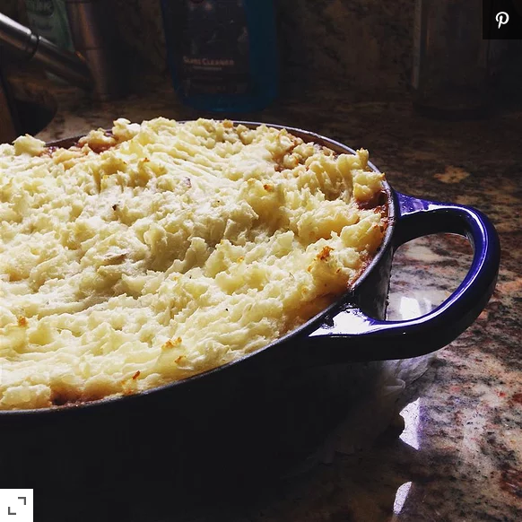

Shepherds Pie

This is a hearty English meal, made with lamb mince, hence the name! Although it is called a pie it doesn't use any pastry
and is so cheap, quick and easy to make, you'll enjoy making it! This is a 'larder cupboard' recipe, which means you can
substitute for whatever you have handy in the cupboard!
Ingredients
- 4 large baking potatoes, peeled and cubed
- 1 tablespoon butter
- ¼ cup milk
- 2 pounds ground lamb
- 1 tablespoon Worcestershire sauce
- 1 cube beef bouillon
- 12 button mushrooms, sliced
- 1 onion, finely chopped
- 1 (16 ounce) can baked beans
- 1 (12 ounce) can canned diced tomatoes
- 3 tablespoons brown gravy mix (Optional)
- 1 (15 ounce) can carrots, drained (Optional)
Steps
- Preheat the oven to 400 degrees F (200 degrees C).
- Place the potatoes into a saucepan and fill with enough water to cover. Bring to a boil, then cook over medium heat
until tender enough to pierce with a fork, about 10 minutes. Drain and mash with butter and milk to your desired
texture.
- Meanwhile, crumble the ground lamb into a large skillet. Cook and stir until no longer pink. Season with
Worcestershire sauce and beef bouillon. Add the mushrooms and onion; continue to cook and stir until tender.
Transfer the contents of the skillet to a large casserole dish.
- Mix the baked beans, diced tomatoes, gravy mix and carrots in with the lamb. Dollop big blobs of mashed potatoes
over the top and carefully spread evenly to cover the entire top. Rake over it with a fork to create a crispy
texture on top when it browns.
- Bake for 10 minutes in the preheated oven, until the top is browned and crisp.